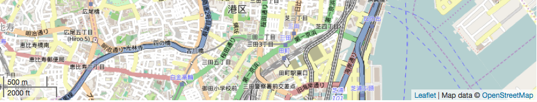
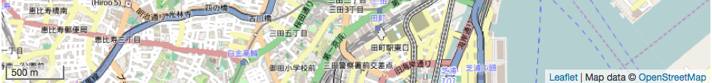
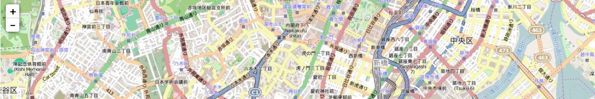
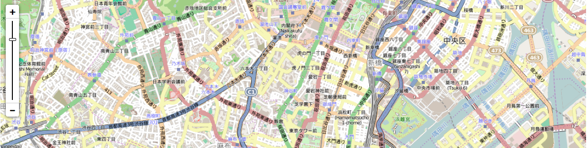
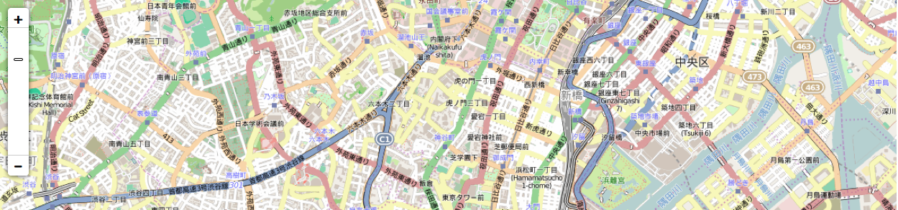

leafletの地図を見やすく＆操作しやすくするための小ネタです。
leafletの地図の表示についてはこちらを参照
縮尺を追加
やっぱり縮尺があったほうが地図は見やすい！
というわけで、縮尺を追加します。
この１行を追加するだけです！
|
|
左下に、メートル単位、フィート単位の縮尺が追加されました。

フィートは日本では一般的ではないので、消しちゃいましょう。imperialの値をfalseにします。
|
|
メートルの縮尺だけになりました！

他にも地図を重ねたり、切り替えたり、いろんなことが出来るようです。
leafletの公式HPを参照してみてください。
ズームコントローラをスライダーに変更
leafletのズームコントローラはデフォルトでは、＋ ーボタンになっています。

これをスライダーに変更してみます。
これはleafletではサポートしていないので、mapboxの機能を使います。
まずは<head>タグ内で、ズームスライダーを読み込みます。
|
|
zoomsliderControlの表示をtrueに、
デフォルトのzoomControlの表示をfalseにします。
|
|
こうすると、スライダーが表示されます。

しかし、、、
Bootstrapを使っていると、スライダーの線が消えて、こんなマヌケな姿になってしまします、、、

しかもよく見ると、ツマミも小さくなって、つまみづらくなってる、、、
こんなときはcssにこの記述を追加すると、元通りになります。
|
|
おまけ：なんでスライダーの線が消えてしまったのか？？？
なぜBootstrapを使うとスライダーの線が消えてしまったのでしょうか？
Bootstrapのcssにはこんな定義があります。
|
|
box-sizingはボックスサイズの算出方法を指定します。
border-boxだと線の太さを幅・高さに含めるcontent-boxだと線の太さを幅・高さに含めない
デフォルトはcontent-boxです。
スライダーのツマミを動かす部分は、L.Control.Zoomslider.cssでこのように定義されています。
|
|
背景色（background-color）が黒、横幅が２ピクセルになっています。
線のように見えていたのは、背景色だったのですね。
box-sizing: content-boxが指定されている状態だと、
このボックスの幅は、2px + 9px（ボーダーの太さ）* 2 = 20 となり、
背景色（黒）がみえる部分は 2px になります。
box-sizing: border-boxが指定されている状態だと、
このボックスの幅は、2px となり、
幅がボーダーラインよりも小さくなってしまって、背景色（黒）が見えなくなってしまうのです。
なので、 こんな感じで.leaflet-control-zoomslider-body のbox-sizingの定義を書き換えることで、スライーダーの線が見えるようになるのです。
|
|
ツマミが小さくなってしまったのも、同じ理由になります。
GISとは関係のない話になりましたが、
いろんなcssを読み込むときは注意が必要ですね！
という話でした！